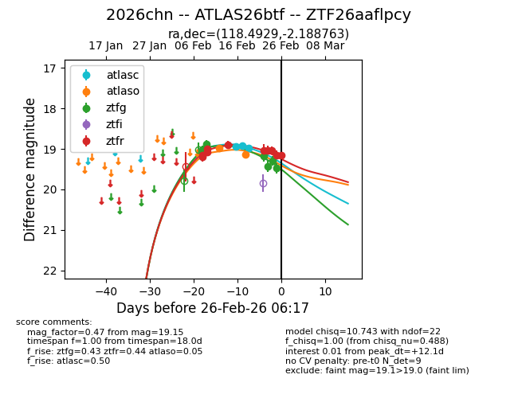
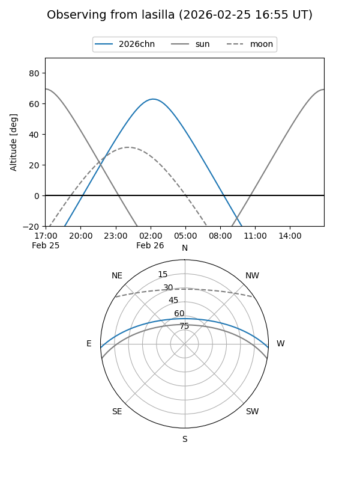
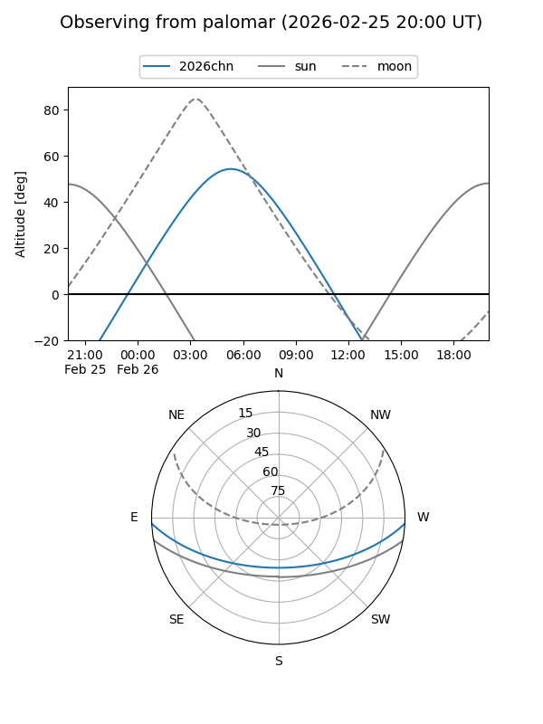
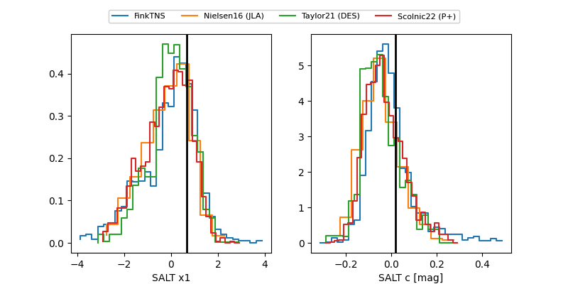

2026chn
Target 2026chn at 2026-02-26 06:18
Aliases and brokers:
FINK: link
Lasair: link
ALeRCE: link
TNS: link
YSE: link
alt names
ZTF26aaflpcy (ztf,fink_ztf)
2026chn (tns,yse)
ATLAS26btf (atlas)
Coordinates:
equatorial (ra, dec) = 118.4929,-2.18876
equatorial (HMS+DMS) = 07:53:58.30,-02:11:19.55
galactic (l, b) = (222.1853,+12.84098)
Flags:
Photometry:
last atlasc=18.97, atlaso=19.13, ztfg=19.48, ztfr=19.15
3 atlasc, 2 atlaso, 8 ztfg, 10 ztfr detections
Lightcurve

Visibility


Additional plots
